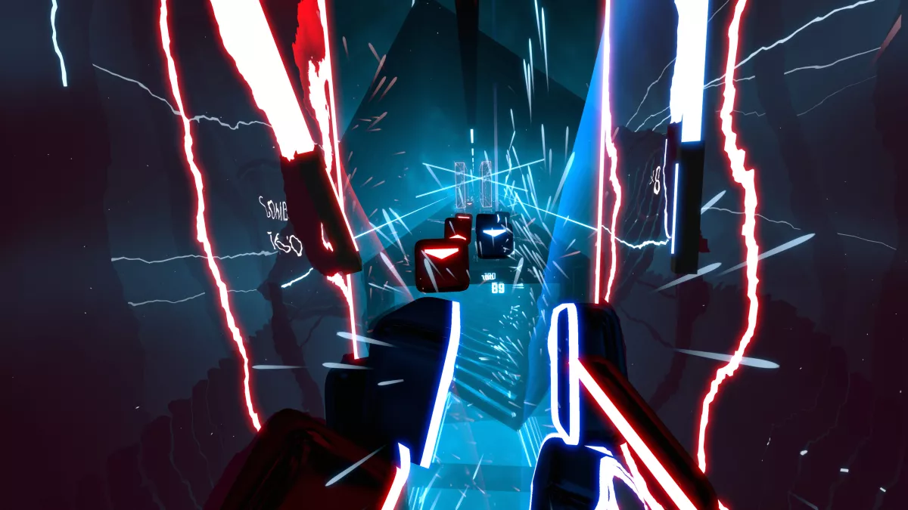

Valve has played a huge and important part in pushing virtual reality forwards over the years with its tracking system and SteamVR platform. But it didn’t launch its own VR headset until 2019, the Valve Index.
Even today, nearly two years after it launched, the Valve Index is one of the best virtual reality headsets money can buy. It has an ultra-crisp display that runs fairly well even with older GPUs, a wide field of view, a high refresh rate and Valve’s 'knuckle' controllers, which can track the movement of each and everyone one of your fingers.
It’s the complete VR package that we’ve been waiting for.
But the kind of next-generation VR on offer from the Valve Index is inevitably expensive – the Valve Index headset is $999 / £919 (about AU$1,425). And, before we hail Valve’s hardware as our VR savior, it’s worth pointing out that it’s not without some issues, including a lack of compelling VR games on Steam and SteamVR’s problematic troubleshooting process.
More recently, there's also a Valve Index problem that has little to do with actual performance: it's tricky to find one. In many regions, stock can be frustratingly hard to come by. Valve CEO Gabe Newell has stated that necessary components for the headset manufactured in Wuhan, China haven't been readily available during the pandemic, so that doesn't look to be changing anytime soon.
But are any of these issues deal-breakers for getting your own Valve VR headset, assuming you can find one? Not at all.
Design
It’s easy to write off the Valve Index as another nondescript VR headset in the same vein as any Oculus Rift or HTC Vive headset – but the devil’s all in the detail here.
On the front, there’s a glossy plastic faceplate above two front-facing cameras that can be used for passthrough video and, potentially, AR applications. Go to put the headset on and you’ll feel the stone gray pads that line the inside; it’s a similar Halo design to what Oculus is doing on the Rift S, and it feels both comfortable and snug.
To keep it that way, there are two dials you’ll need to use – one on the left side that changes the physical distance from the lens to your eyes, and the one on that back that makes the headband tighter or looser. While the second is definitely important, it’s something we’ve seen before. It’s the first dial that’s actually groundbreaking, as that’s what allows the Index to achieve its industry-leading field of view spec.
In terms of hard numbers, the Valve Index uses a dual LCD display with a 1440 x 1600 resolution per eye. Unlike Oculus, which has actually dropped the refresh rate of its displays for the Oculus Rift S, the Valve Index has a 120Hz display, with the option to bump this up to 144Hz. For comparison, the more-expensive Vive Pro has a lower refresh rate and smaller field of view, so this actually feels like a big upgrade.
Performance
Amazingly, while all these features would seem to require extra horsepower under the hood of your PC, they actually worked fine with our much older Nvidia GTX 980 GPU. That’s a boon for folks who don’t have the money to upgrade their GPU after buying a $1,000 VR headset, and it could allow for more people to get into VR.
That last bit is important, because as more people adopt VR, more developers will see a business case for making VR games – right now, Steam’s VR selection is a bit bare compared to the ever-expanding main store, and even the top titles selected by Valve to show off the new hardware are really just a lot of old titles that play better with the Knuckle controllers (see: Space Pirate Trainer, Fruit Ninja, Beat Saber and Arizona Sunshine).
That said, when we played some newer titles, like Valve’s Moondust demo, we couldn’t help but smile. Not only do the games look great on the high-resolution screen, and play without any hitches even on our less-than-ideal hardware, but they feel more interactive with the Index Controller. Being able to release items by opening your hand – a completely natural experience here in the real world – feels unnatural at first after using regular VR controllers for the last two years, but once you adapt to it, it once again becomes second nature.
Unfortunately, not all titles will do something extra with the new Valve Index Controllers. In fact, during our testing we found a number of games that actually didn’t work, period. According to Valve, more games will be optimized for the headset in the future, but right now there are only about three dozen such titles – a decent number before launch, but still just a fraction of the VR games available on Steam.

Setup and Steam VR
The biggest fault we found with the headset after using it for more than a month is that SteamVR can be capricious… and, occasionally, a malicious, dastardly platform.
As anyone who’s used an HTC Vive or Vive Pro can tell you, SteamVR doesn’t always like running properly the first time, telling you that something is disconnected, or that your firmware is out of date despite just being updated, or simply telling you the hardware can’t be found. And that’s frustrating when you just want to jump in and play this week’s latest release.
This happened to us a few times throughout our testing, and it gave us a real sense of deja vu – we can remember testing the Vive Pro just over a year ago and having the same problem. Friends and readers have also complained about the original Vive’s lengthy and unwieldy setup process, only to find a number of errors the next time they go to play it.
In Valve’s defense, the setup process has gotten a bit smoother over the years. The headset does appear to work right out of the box without much hassle, and setting up the 2.0 base station appears to be a bit faster than before. But there’s still the problem that if anything in the room changes – the base stations get moved because you’re cleaning the shelf, for example – you’ll need to recalibrate and go through the whole setup process again.
Pros
+ Wider field of view
+'Knuckle' controllers
+Room-scale VR
+Great audio
Cons
-Still uses base stations
-SteamVR has serious issues
-Lackluster game selection
-Glasses do get in the way

Final Verdict
The Valve Index might be one of the best VR headsets currently on the market, but it’s brought some of VR’s most annoying aspects along for the ride. Setting it up can be time-consuming and irritating, updates can cause connection issues, and you may find a new error the next time you go to use it.
However, if you can look past those issues, this is a really good VR headset. Its higher-resolution screen and better refresh rate allowed us to use it for longer periods of time without discomfort compared to most other VR headsets, and the Index Controllers are a real step up from the ones that ship with the Vive.
But square all of these performance improvements against the headset’s price tag, and it's a lot of money to pay for a piece of hardware that isn’t absolutely perfect – especially when Oculus has a great VR headset of its own. The Oculus Quest and now the Oculus Quest 2 are both available at less than half the cost of the Index.
Around the house, there’s no doubt the Valve Index will be our default VR headset going forward. It’s a significant upgrade to the HTC Vive, and runs much smoother than the Vive Pro, a powerful VR headset that really struggled to deliver on the promise of high-end VR. Whether it’s a better all-around headset than the Oculus Quest, however, is up for debate; the Valve Index has the better specs, but Quest has the convenience and is bound to be more appealing to anyone who doesn't have the time, high-tech set-up or budget to opt for the Vive Index. Ultimately, which one you choose depends on the experience you want and how much money you have in the bank.